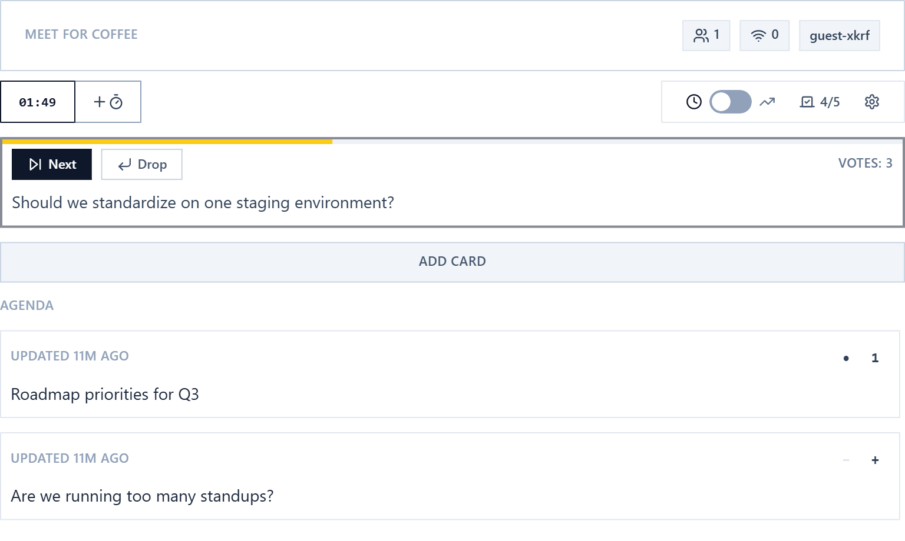

Shared agenda topics
Drop topics on a shared board during the call, then work the list together so nothing important gets skipped.
Google Meet add-on
Meet for Coffee is a Google Meet add-on for lightweight meeting notes, shared agenda topics, and quick votes — right in the Meet sidebar, with one-click Markdown export when you're done.
Free to install · Opens in the Meet sidebar · No data sold, ever.

Drop topics on a shared board during the call, then work the list together so nothing important gets skipped.
Let the group upvote what matters most and capture lightweight notes as the discussion happens — no second tool, no tab switching.
Copy the whole board as clean Markdown in one click — drop your topics, notes, and decisions straight into docs, tickets, or chat.
No setup project, no migration — install it and open it in your next call.
Add Meet for Coffee from the Google Workspace Marketplace for yourself or your whole team.
Launch Meet for Coffee from the Google Meet sidebar during any meeting and sign in with your Google account.
Click the invite button to add everyone in the meeting to the board, then work through your topics together.
Meet for Coffee gives teams a shared, in-call home for agenda topics, notes, and votes — a calm meeting companion instead of a scattered pile of docs and chat messages. It keeps the focus on the discussion, helps quieter voices surface topics with a vote, and lets you export the whole board as Markdown when the call wraps.
Meet for Coffee requests only basic Google account identifiers — name, email, and profile image — to sign you in and load the right workspace. It never sells Google user data or uses it for advertising.
Install in a minute and open it from the Meet sidebar on your very next call.